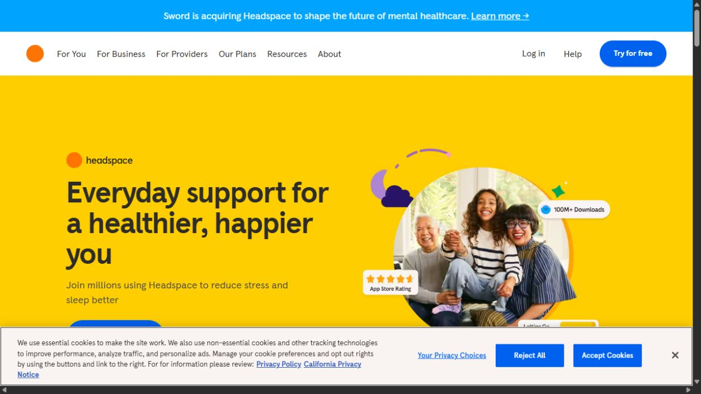
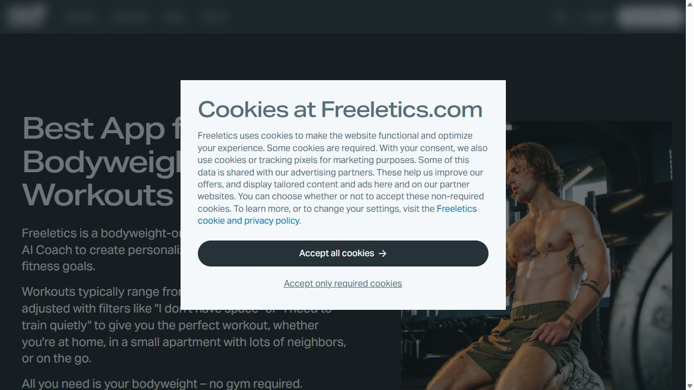
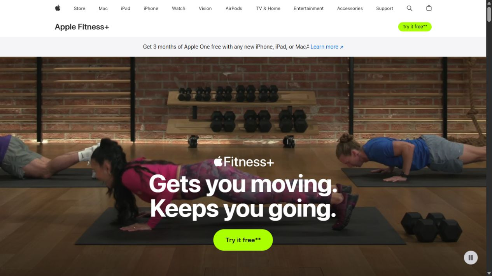
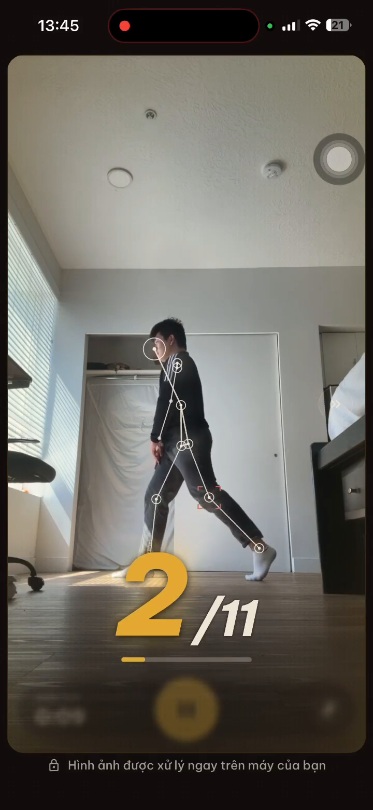

DESIGN EXPLORATION / 01
One Vika.
Five ways to introduce it.
Compare the composition and the way each page tells the story. Open a direction to explore the full page on desktop or mobile.
Read the briefYOUR SHORTLIST
Keep what works.
Shortlist any directions you want to compare.
02 / REFERENCE BOARD
What informed the directions.
These are reference choices for this first round. They are not yet your taste library. We can replace them with references you prefer.

Headspace ↗A welcoming split hero, warm color, and people in everyday settings.

Freeletics ↗A dark opening and a stronger sports identity. Used as a composition reference.

Apple Fitness+ ↗A large movement image and product demonstrations that explain the experience.
03 / THE WORKING BRIEF
Built around the person
starting at home.
Who we are designing for
Vietnamese beginners and busy people who want guided workouts at home. You confirmed this audience.
What stays recognizable
Vika's logo, encouraging Vietnamese, and the mobile app's Be Vietnam Pro, ivory, dark ink, and gold. Layout and imagery are open for exploration.
The main action
Each concept leads to the current experience signup section. The question of early access versus app download is still open.
What the page should do
- Explain the camera coach with a real app view.
- Show how someone starts a workout at home.
- Answer practical questions before the signup.
- Keep navigation, keyboard access, and mobile reading simple.
What needs another pass
Final imagery, current app recordings, and the registration endpoint. The existing survey claims and testimonials need confirmed context before we reuse them.
FROM VIKA MOBILE
Real app captures.
Existing lifestyle artwork.
The captures come from the September 5 app recording. They give the layouts a concrete product to explain. Fresh recordings and new imagery can follow the direction choice.
Asset sources ↗
